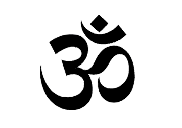

Religious and Spiritual Meditation
Bahá'í Faith
In the teachings of the Bahá'í Faith meditation, along with prayer, is one of the primary tools for spiritual development, and it mainly refers to one's reflection on the words of God. While prayer and meditation are linked where meditation happens generally in a prayerful attitude, prayer is seen specifically as turning toward God, and meditation is seen as a communion with one's self where one focuses on the divine. The Bahá'í teachings note that the purpose of meditation is to strengthen one's understanding of the words of God, and to make one's soul more susceptible to their potentially transformative power, and that both prayer and meditation are needed to bring about and to maintain a spiritual communion with God. Bahá'u'lláh, the founder of the religion, never specified any particular form of meditation, and thus each person is free to choose their own form. However, he specifically did state that Bahá'ís should read a passage of the Bahá'í writings twice a day, once in the morning, and once in the evening, and meditate on it. He also encouraged people to reflect on one's actions and worth at the end of each day. The Nineteen Day Fast, a nineteen-day period of the year, during which Bahá'ís adhere to a sunrise-to-sunset fast, is also seen as meditative, where Bahá'ís must meditate and pray to reinvigorate their spiritual forces.
Buddhism
Buddhist meditation refers to the meditative practices associated with the religion and philosophy of Buddhism. Core meditation techniques have been preserved in ancient Buddhist texts and have proliferated and diversified through teacher-student transmissions. Buddhists pursue meditation as part of the path toward Enlightenment and Nirvana. The closest words for meditation in the classical languages of Buddhism are bhāvanā, jhāna/dhyāna, and vipassana. According to Manmatha Nath Dutt, there is hardly any difference between mainstream Hinduism's Dhyana, Dharana and Samadhi with the Buddhist Dhyana, Bhavana, Samadhi, especially as both require following the precepts (nayas and niyamas.) Buddhist meditation techniques have become increasingly popular in the wider world, with many non-Buddhists taking them up for a variety of reasons. There is considerable homogeneity across meditative practices – such as breath meditation and various recollections (anussati) – that are used across Buddhist schools, as well as significant diversity. In the Theravāda tradition alone, there are over fifty methods for developing mindfulness and forty for developing concentration, while in the Tibetan tradition there are thousands of visualization meditations. Most classical and contemporary Buddhist meditation guides are school-specific. The Buddha is said to have identified two paramount mental qualities that arise from wholesome meditative practice: "serenity" or "tranquillity" (Pali: samatha) which steadies, composes, unifies and concentrates the mind; "insight" (Pali: vipassana) which enables one to see, explore and discern "formations" (conditioned phenomena based on the five aggregates). Through the meditative development of serenity, one is able to release obscuring hindrances; and it is, with the release of the hindrances, through the meditative development of insight that one gains liberating wisdom.
Christianity
Christian Meditation is a term for form of prayer in which a structured attempt is made to get in touch with and deliberately reflect upon the revelations of God. The word meditation comes from the Latin word meditari, which means to concentrate. Christian meditation is the process of deliberately focusing on specific thoughts (e.g. a biblical scene involving Jesus and the Virgin Mary) and reflecting on their meaning in the context of the love of God. Christian meditation contrasts with cosmic styles of eastern meditation as radically as the portrayal of God the Father in the Bible contrasts with discussions of Krishna or Brahman in Indian teachings. Unlike eastern meditations, most styles of Christian meditations do not rely on the repeated use of mantras, but are intended to stimulate thought and deepen meaning. Christian meditation aims to heighten the personal relationship based on the love of God that marks Christian communion. In Aspects of Christian meditation, the Catholic Church warned of potential incompatibilities in mixing Christian and eastern styles of meditation. In 2003, in A Christian reflection on the New Age the Vatican announced that the "Church avoids any concept that is close to those of the New Age". Christian meditation is sometimes taken to mean the middle level in a broad three stage characterization of prayer: it then involves more reflection than first level vocal prayer, but is more structured than the multiple layers of contemplation in Christianity.
Hinduism

There are many schools and styles of meditation within Hinduism. Yoga is generally done to prepare one for meditation, and meditation is done to realize union of one's self, one's atman, with the omnipresent and non-dual Brahman. This experience is referred to as moksha by Hindus, and is similar to the concept of Nirvana in Buddhism. The earliest clear references to meditation in Hindu literature are in the middle Upanishads and the Mahabharata, which includes the Bhagavad Gita. According to Gavin Flood, the earlier Brihadaranyaka Upanishad refers to meditation when it states that "having becoming calm and concentrated, one perceives the self (ātman) within oneself". Within Patañjali's ashtanga yoga practice there are eight limbs leading to kaivalya "aloneness." These are ethical discipline (yamas), rules (niyamas), physical postures (āsanas), breath control (prāṇāyama), withdrawal from the senses (pratyāhāra), one-pointedness of mind (dhāraṇā), meditation (dhyāna), and finally samādhi, which is often described as the realization of the identity of the Self (ātman) with the omnipresent (Brahman), and is the ultimate aim of all Hindu yogis. Meditation in Hinduism is practiced in different forms by different schools and sects and has expanded beyond Hinduism to the West. The influential modern proponent of Hinduism who first introduced Eastern philosophy to the West in the late 19th century, Swami Vivekananda, describes meditation as follows: Meditation has been laid stress upon by all religions. The meditative state of mind is declared by the Yogis to be the highest state in which the mind exists. When the mind is studying the external object, it gets identified with it, loses itself. To use the simile of the old Indian philosopher: the soul of man is like a piece of crystal, but it takes the colour of whatever is near it. Whatever the soul touches ... it has to take its colour. That is the difficulty. That constitutes the bondage.
Islam
Remembrance of God in Islam, which is known by the concept Dhikr is interpreted in different meditative techniques in Sufismor Islamic mysticism. This became one of the essential elements of Sufism as it was systematized traditionally. It is juxtaposed with fikr (thinking) which leads to knowledge. By the 12th century, the practice of Sufism included specific meditative techniques, and its followers practiced breathing controls and the repetition of holy words. Numerous Sufi traditions place emphasis upon a meditative procedure which comes from the cognitive aspect to one of the two principal approaches to be found in the Buddhist traditions: that of the concentration technique, involving high-intensity and sharply focused introspection. In the Oveyssi-Shahmaghsoudi Sufi order, for example, this is particularly evident, where muraqaba takes the form of tamarkoz, the latter being a Persian term that means concentration. Meditative quiescence is said to have a quality of healing, and—in contemporary terminology—enhancing creativity. Tafakkur or tadabbur in Sufism literally means reflection upon the universe: this is considered to permit access to a form of cognitive and emotional development that can emanate only from the higher level, i.e. from God. The sensation of receiving divine inspiration awakens and liberates both heart and intellect, permitting such inner growth that the apparently mundane actually takes on the quality of the infinite. Muslim teachings embrace life as a test of one's submission to God. Meditation in the Sufi traditions is largely based on a spectrum of mystical exercises, varying from one lineage to another. Such techniques, particularly the more audacious, can be, and often have been down the ages, a source of controversy among scholars. One broad group of ulema, followers of the great Al-Ghazzali, for example, have in general been open to such techniques and forms of devotion. In recent years, meditation or Muraqaba has been popularized in various parts of the world by Silisila Naqshbandia Mujaddadia under Nazim Al-Haqqani and Silsila Azeemia under Khwaja Shamsuddin Azeemi.
Jainism

In Jainism, meditation has been a core spiritual practice, one that Jains believe people have undertaken since the teaching of the Tirthankara, Rishabha. All the twenty-four Tirthankaras practiced deep meditation and attained enlightenment.[107] They are all shown in meditative postures in the images or idols. Mahavira practiced deep meditation for twelve years and attained enlightenment.[108] The Acaranga Sutra dating to 500 BCE, addresses the meditation system of Jainism in detail.[109] Acharya Bhadrabahu of the 4th century BCE practiced deep Mahaprana meditation for twelve years.[110] Kundakunda of 1st century BCE, opened new dimensions of meditation in Jain tradition through his books Samayasāra, Pravachansar and others.[111] Jain meditation and spiritual practices system were referred to as salvation-path. It has three important parts called the Ratnatraya "Three Jewels": right perception and faith, right knowledge and right conduct.[112] Meditation in Jainism aims at realizing the self, attaining salvation, take the soul to complete freedom.[113] It aims to reach and to remain in the pure state of soul which is believed to be pure consciousness, beyond any attachment or aversion. The practitioner strives to be just a knower-seer (Gyata-Drashta). Jain meditation can be broadly categorized to Dharmya Dhyana and Shukla Dhyana. There exists a number of meditation techniques such as pindāstha-dhyāna, padāstha-dhyāna, rūpāstha-dhyāna, rūpātita-dhyāna, savīrya-dhyāna, etc. In padāstha dhyāna one focuses on Mantra.[114] A Mantra could be either a combination of core letters or words on deity or themes. There is a rich tradition of Mantra in Jainism. All Jain followers irrespective of their sect, whether Digambara or Svetambara, practice mantra. Mantra chanting is an important part of daily lives of Jain monks and followers. Mantra chanting can be done either loudly or silently in mind. Yogasana and Pranayama has been an important practice undertaken since ages. Pranayama – breathing exercises – are performed to strengthen the five Pranas or vital energy.[115] Yogasana and Pranayama balances the functioning of neuro-endocrine system of body and helps in achieving good physical, mental and emotional health.[116] Contemplation is a very old and important meditation technique. The practitioner meditates deeply on subtle facts. In agnya vichāya, one contemplates on seven facts – life and non-life, the inflow, bondage, stoppage and removal of karmas, and the final accomplishment of liberation. In apaya vichāya, one contemplates on the incorrect insights one indulges, which eventually develops right insight. In vipaka vichāya, one reflects on the eight causes or basic types of karma. In sansathan vichāya, one thinks about the vastness of the universe and the loneliness of the soul.[114] Acharya Mahapragya formulated Preksha meditation in the 1970s and presented a well-organised system of meditation. Asana and Pranayama, meditation, contemplation, mantra and therapy are its integral parts.[117] Numerous Preksha meditation centers came into existence around the world and numerous meditations camps are being organized to impart training in it.
Judaism

There is evidence that Judaism has had meditative practices that go back thousands of years.[118][119] For instance, in the Torah, the patriarch Isaac is described as going "לשוח" (lasuach) in the field—a term understood by all commentators as some type of meditative practice (Genesis 24:63).[120] Similarly, there are indications throughout the Tanach (the Hebrew Bible) that meditation was used by the prophets.[121] In the Old Testament, there are two Hebrew words for meditation: hāgâ (Hebrew: הגה), which means to sigh or murmur, but also to meditate, and sîḥâ (Hebrew: שיחה), which means to muse, or rehearse in one's mind. The Jewish mystical tradition, Kabbalah, is inherently a meditative field of study.[122][123] Traditionally, Kabbalah is only taught to Jews over the age of forty in Ashkenaz, though training begins at 13 in Sephardic and Mizrahi communities. The Talmud refers to the advantage of the scholar over the prophet, as his understanding takes on intellectual, conceptual form, that deepens mental grasp, and can be communicated to others. The advantage of the prophet over the scholar is in the transcendence of their intuitive vision. The ideal illumination is achieved when the insights of mystical revelation are brought into conceptual structures. For example, Isaac Luria revealed new doctrines of Kabbalah in the 16th Century, that revolutionised and reordered its teachings into a new system.[124] However, he did not write down his teachings, which were recounted and interpreted instead by his close circle of disciples. After a mystical encounter, called in Kabbalistic tradition an "elevation of the soul" into the spiritual realms, Isaac Luria said that it would take 70 years to explain all that he had experienced. As Kabbalah evolved its teachings took on successively greater conceptual form and philosophical system. Nonetheless, as is implied by the name of Kabbalah, which means "to receive", its exponents see that for the student to understand its teachings requires a spiritual intuitive reception that illuminates and personalises the intellectual structures. Corresponding to the learning of Kabbalah are its traditional meditative practices, as for the Kabbalist, the ultimate purpose of its study is to understand and cleave to the Divine.[125] Classic methods include the mental visualisation of the supernal realms the soul navigates through to achieve certain ends. One of the best known types of meditation in early Jewish mysticism was the work of the Merkabah, from the root /R-K-B/ meaning "chariot" (of God). In modern Jewish practice, one of the best known meditative practices is called "hitbodedut" (התבודדות, alternatively transliterated as "hisbodedus"), and is explained in Kabbalistic, Hasidic, and Mussar writings, especially the Hasidic method of Rabbi Nachman of Breslav. The word derives from the Hebrew word "boded" (בודד), meaning the state of being alone.[126] Another Hasidic system is the Habad method of "hisbonenus", related to the Sephirah of "Binah", Hebrew for understanding.[127] This practice is the analytical reflective process of making oneself understand a mystical concept well, that follows and internalises its study in Hasidic writings.
Islam
Remembrance of God in Islam, which is known by the concept Dhikr is interpreted in different meditative techniques in Sufismor Islamic mysticism. This became one of the essential elements of Sufism as it was systematized traditionally. It is juxtaposed with fikr (thinking) which leads to knowledge. By the 12th century, the practice of Sufism included specific meditative techniques, and its followers practiced breathing controls and the repetition of holy words. Numerous Sufi traditions place emphasis upon a meditative procedure which comes from the cognitive aspect to one of the two principal approaches to be found in the Buddhist traditions: that of the concentration technique, involving high-intensity and sharply focused introspection. In the Oveyssi-Shahmaghsoudi Sufi order, for example, this is particularly evident, where muraqaba takes the form of tamarkoz, the latter being a Persian term that means concentration. Meditative quiescence is said to have a quality of healing, and—in contemporary terminology—enhancing creativity. Tafakkur or tadabbur in Sufism literally means reflection upon the universe: this is considered to permit access to a form of cognitive and emotional development that can emanate only from the higher level, i.e. from God. The sensation of receiving divine inspiration awakens and liberates both heart and intellect, permitting such inner growth that the apparently mundane actually takes on the quality of the infinite. Muslim teachings embrace life as a test of one's submission to God. Meditation in the Sufi traditions is largely based on a spectrum of mystical exercises, varying from one lineage to another. Such techniques, particularly the more audacious, can be, and often have been down the ages, a source of controversy among scholars. One broad group of ulema, followers of the great Al-Ghazzali, for example, have in general been open to such techniques and forms of devotion. In recent years, meditation or Muraqaba has been popularized in various parts of the world by Silisila Naqshbandia Mujaddadia under Nazim Al-Haqqani and Silsila Azeemia under Khwaja Shamsuddin Azeemi.
Jainism
In Jainism, meditation has been a core spiritual practice, one that Jains believe people have undertaken since the teaching of the Tirthankara, Rishabha. All the twenty-four Tirthankaras practiced deep meditation and attained enlightenment.[107] They are all shown in meditative postures in the images or idols. Mahavira practiced deep meditation for twelve years and attained enlightenment.[108] The Acaranga Sutra dating to 500 BCE, addresses the meditation system of Jainism in detail.[109] Acharya Bhadrabahu of the 4th century BCE practiced deep Mahaprana meditation for twelve years.[110] Kundakunda of 1st century BCE, opened new dimensions of meditation in Jain tradition through his books Samayasāra, Pravachansar and others.[111] Jain meditation and spiritual practices system were referred to as salvation-path. It has three important parts called the Ratnatraya "Three Jewels": right perception and faith, right knowledge and right conduct.[112] Meditation in Jainism aims at realizing the self, attaining salvation, take the soul to complete freedom.[113] It aims to reach and to remain in the pure state of soul which is believed to be pure consciousness, beyond any attachment or aversion. The practitioner strives to be just a knower-seer (Gyata-Drashta). Jain meditation can be broadly categorized to Dharmya Dhyana and Shukla Dhyana. There exists a number of meditation techniques such as pindāstha-dhyāna, padāstha-dhyāna, rūpāstha-dhyāna, rūpātita-dhyāna, savīrya-dhyāna, etc. In padāstha dhyāna one focuses on Mantra.[114] A Mantra could be either a combination of core letters or words on deity or themes. There is a rich tradition of Mantra in Jainism. All Jain followers irrespective of their sect, whether Digambara or Svetambara, practice mantra. Mantra chanting is an important part of daily lives of Jain monks and followers. Mantra chanting can be done either loudly or silently in mind. Yogasana and Pranayama has been an important practice undertaken since ages. Pranayama – breathing exercises – are performed to strengthen the five Pranas or vital energy.[115] Yogasana and Pranayama balances the functioning of neuro-endocrine system of body and helps in achieving good physical, mental and emotional health.[116] Contemplation is a very old and important meditation technique. The practitioner meditates deeply on subtle facts. In agnya vichāya, one contemplates on seven facts – life and non-life, the inflow, bondage, stoppage and removal of karmas, and the final accomplishment of liberation. In apaya vichāya, one contemplates on the incorrect insights one indulges, which eventually develops right insight. In vipaka vichāya, one reflects on the eight causes or basic types of karma. In sansathan vichāya, one thinks about the vastness of the universe and the loneliness of the soul.[114] Acharya Mahapragya formulated Preksha meditation in the 1970s and presented a well-organised system of meditation. Asana and Pranayama, meditation, contemplation, mantra and therapy are its integral parts.[117] Numerous Preksha meditation centers came into existence around the world and numerous meditations camps are being organized to impart training in it.
Judaism
There is evidence that Judaism has had meditative practices that go back thousands of years.[118][119] For instance, in the Torah, the patriarch Isaac is described as going "לשוח" (lasuach) in the field—a term understood by all commentators as some type of meditative practice (Genesis 24:63).[120] Similarly, there are indications throughout the Tanach (the Hebrew Bible) that meditation was used by the prophets.[121] In the Old Testament, there are two Hebrew words for meditation: hāgâ (Hebrew: הגה), which means to sigh or murmur, but also to meditate, and sîḥâ (Hebrew: שיחה), which means to muse, or rehearse in one's mind. The Jewish mystical tradition, Kabbalah, is inherently a meditative field of study.[122][123] Traditionally, Kabbalah is only taught to Jews over the age of forty in Ashkenaz, though training begins at 13 in Sephardic and Mizrahi communities. The Talmud refers to the advantage of the scholar over the prophet, as his understanding takes on intellectual, conceptual form, that deepens mental grasp, and can be communicated to others. The advantage of the prophet over the scholar is in the transcendence of their intuitive vision. The ideal illumination is achieved when the insights of mystical revelation are brought into conceptual structures. For example, Isaac Luria revealed new doctrines of Kabbalah in the 16th Century, that revolutionised and reordered its teachings into a new system.[124] However, he did not write down his teachings, which were recounted and interpreted instead by his close circle of disciples. After a mystical encounter, called in Kabbalistic tradition an "elevation of the soul" into the spiritual realms, Isaac Luria said that it would take 70 years to explain all that he had experienced. As Kabbalah evolved its teachings took on successively greater conceptual form and philosophical system. Nonetheless, as is implied by the name of Kabbalah, which means "to receive", its exponents see that for the student to understand its teachings requires a spiritual intuitive reception that illuminates and personalises the intellectual structures. Corresponding to the learning of Kabbalah are its traditional meditative practices, as for the Kabbalist, the ultimate purpose of its study is to understand and cleave to the Divine.[125] Classic methods include the mental visualisation of the supernal realms the soul navigates through to achieve certain ends. One of the best known types of meditation in early Jewish mysticism was the work of the Merkabah, from the root /R-K-B/ meaning "chariot" (of God). In modern Jewish practice, one of the best known meditative practices is called "hitbodedut" (התבודדות, alternatively transliterated as "hisbodedus"), and is explained in Kabbalistic, Hasidic, and Mussar writings, especially the Hasidic method of Rabbi Nachman of Breslav. The word derives from the Hebrew word "boded" (בודד), meaning the state of being alone.[126] Another Hasidic system is the Habad method of "hisbonenus", related to the Sephirah of "Binah", Hebrew for understanding.[127] This practice is the analytical reflective process of making oneself understand a mystical concept well, that follows and internalises its study in Hasidic writings.